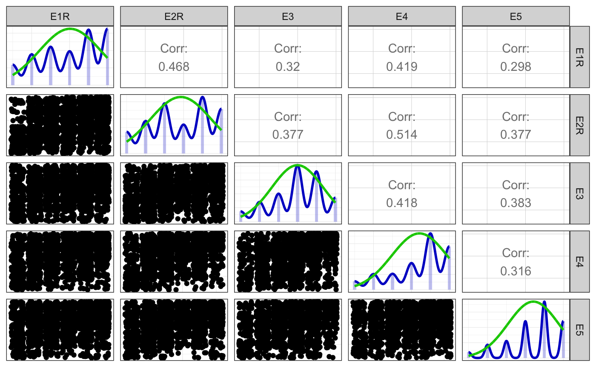
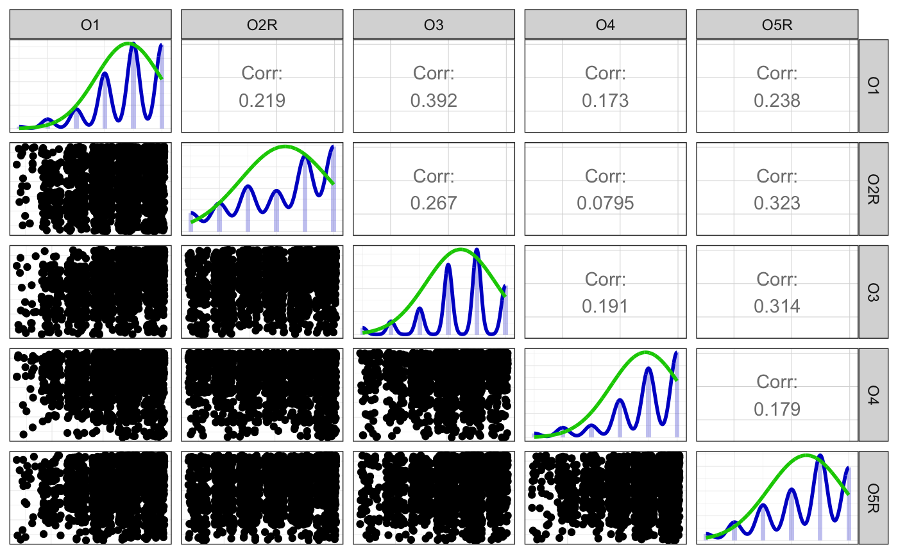
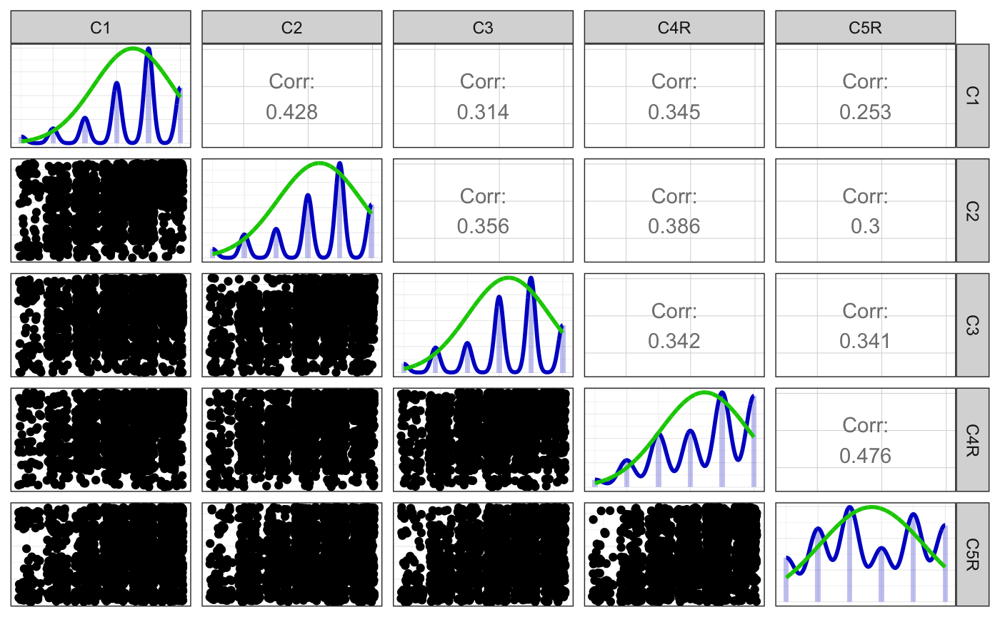
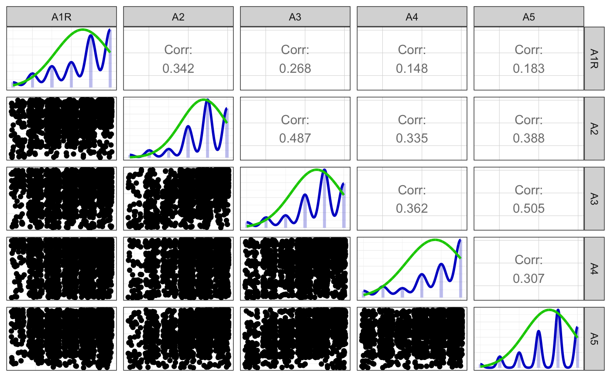
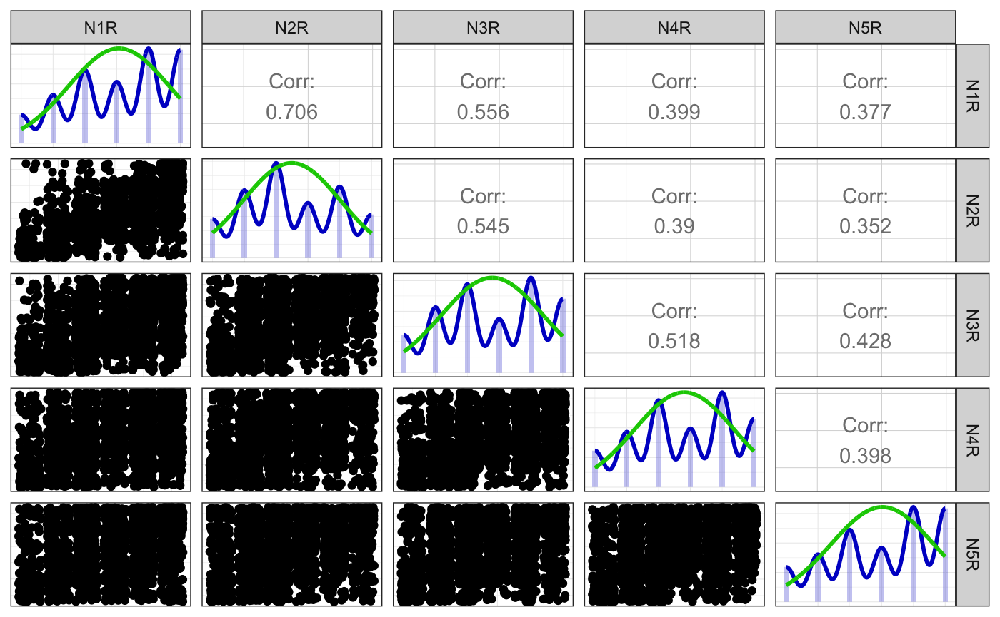
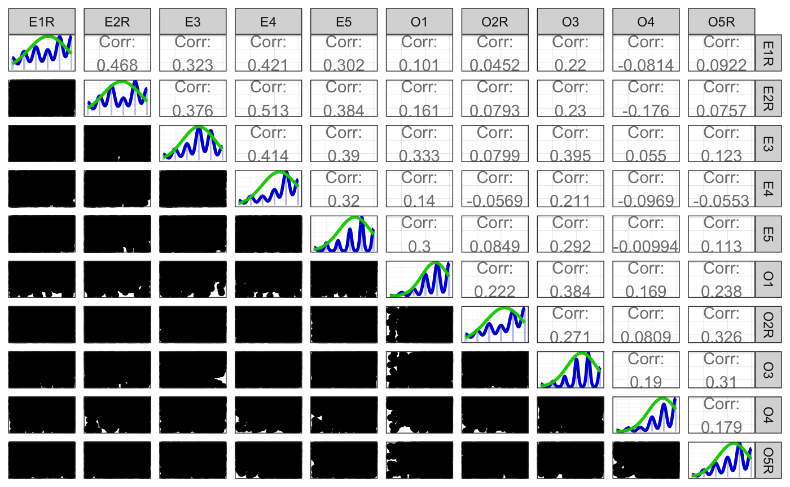

Codebook tutorial
Ruben Arslan
2019-02-21
Source:vignettes/codebook_tutorial.Rmd
codebook_tutorial.RmdThis is the practical part of a tutorial manuscript for this package, which you can find in full on PsyArXiv.
Using the codebook package locally in RStudio
knit_by_pkgdown <- !is.null(knitr::opts_chunk$get("fig.retina"))
knitr::opts_chunk$set(
warning = TRUE, # show warnings during codebook generation
message = TRUE, # show messages during codebook generation
error = TRUE, # do not interrupt codebook generation in case of errors,
# usually better for debugging
echo = TRUE # show R code
)
ggplot2::theme_set(ggplot2::theme_bw())
pander::panderOptions("table.split.table", Inf)Loading data
So, let us load some data. In this Tutorial, I will walk you through by using the “bfi” dataset made available in the psych package (Revelle et al. 2010; Revelle et al. 2016; Goldberg and Others 1999). The bfi dataset is already very well-documented in the psych R package, but using the codebook, we can add automatically computed reliabilities, graphs, and machine-readable metadata to the mix. The dataset is already available in R, but this will not usually be the case. Therefore, I have uploaded it to the Open Science Framework where you can also find many other publicly available datasets. A new package in R, rio (Chan and Leeper 2018), makes loading data from websites as easy as loading local data. You can import the dataset directly from the Open Science Framework by writing
Rmarkdown documents have to be reproducible and self-contained. Therefore, it is not enough for a dataset to be loaded locally, you have to load the dataset at the beginning of the document. We can also use the document interactively, although this will not work so well for the codebook package. To see how this works, execute the line you just added by pressing Command + Enter (if you are on a Mac) or Ctrl + Enter (on other platforms).
Did it work? RStudio has a nice data viewer you can use to check. In the environment tab on the top right, you should see “codebook_data”. Click that row. A spreadsheet view of the dataset opens in RStudio. As you can see, it is pretty uninformative. Just long columns of numbers with variable names like A4. Are we talking aggressiveness, agreeableness, or the German industrial norm for paper size? The lack of useful metadata is palpable. What can the codebook package do with this? Click the Knit button again. This time, it will take longer. Once the result is shown in the viewer tab, scroll through it. You can see that a few warnings let us know that the package saw items that might form part of a scale, but there was no aggregated scale. You will also see graphs of the distribution for each item and summary statistics.
Adding and changing metadata
Variable labels
The last codebook we generated could already be useful if the variables had meaningful names and self-explanatory values. Yet, this is not often the case. What we need is more metadata: labels for variables and values, a dataset description, and so on. The codebook package can use metadata that are stored in R attributes. So, what are attributes and how do metadata get there? Attributes in R are most commonly used to store the type of a variable. A datetime in R is just a number with two attributes (a time zone and a class). However, these attributes can just as easily store other metadata. The Hmisc (Harrell, 2018), haven (Wickham & Miller, 2018), and rio (Chan & Leeper, 2018) packages, for example, use them to store labels. The haven and rio packages set these attributes when importing data from SPSS or Stata files. However, it is also easily possible to add metadata ourselves:
Here, we assigned a new label to a variable. Because it is inconvenient to write the above repeatedly, the labelled package (Larmarange, 2018) adds a few convenience functions. Load the labelled package, by writing the following in your codebook.rmd.
Now, let us label the C5 item.
##
## LABELLED 2.0.0: BREAKING CHANGE
##
## Following version 2.0.0 of `haven`, `labelled()` and `labelled_spss()` now produce objects with class 'haven_labelled' and 'haven_labelled_spss', due to conflict between the previous 'labelled' class and the 'labelled' class used by `Hmisc`.
##
## A new function `update_labelled()` could be used to convert data imported with an older version of `haven`/`labelled` to the new classes.We can also label values in this manner:
Write these labelling commands after loading the dataset and click “Knit” again. As you can now see in the viewer pane, the C1 variable has gained a label at the top and the lowest and highest values on the X axis are now labelled too. If the prospect of adding such labels for every single variable in this way seems tedious, do not worry. Many researchers already have a codebook in the form of a spreadsheet and want to import this. The bfi dataset in the psych package is a good example of this, because it comes with a tabular dictionary. On the line after loading the bfi data, type the following to import the data dictionary.
To see what you just loaded, click the “dict” row in the environment tab in the top right panel. As you can see, the dictionary has information on the constructs on which this item loads and on the direction with which it should load on the construct. Let us now make these metadata usable by the codebook package. We will often need to slightly reshape data to help us do this. To make this easier, we will use the suite of packages called the tidyverse. Load them by typing the following.
Now, we want to use the variable labels that are already in the dictionary. Because we want to label many variables at once, we need a list of variable labels. Instead of assigning one label to one variable as above, we assign many labels to the whole dataset from a named list. Here, each element of the list is one item that we want to label.
But we already have a list of variables and labels in our data dictionary that we can use, so we do not have to tediously write out this list. We have to slightly reshape it though, because right now, it is in the form of a rectangular data frame, not a named list. To do so, we use a convenience function from the codebook function called dict_to_list. This function expects to receive a data frame with two columns, the first should be the variable names, the second the variable labels. To select these columns, we use the select function from the tidyverse packages. We also use a special operator, called a pipe, which looks like this %>%. It allows us to write R code from left to right, passing along the thing we are working on. This allows us to read the code below almost like an English sentence. We take the dict dataset, then we select the variable and label columns, then we use the dict_to_list function. We assign the result of this operation to become the variable labels of codebook_data. Add the following line after importing the dictionary.
Did it work? Click codebook_data in the Environment tab again. You should see the variable labels below the variable names now. You can also click Knit again, and you will see that your codebook now contains the variable labels. They are both part of the plots and part of the codebook table at the end. You cannot see this, but they are also part of the metadata that can be found using, for example, Google Dataset Search.
Value labels
So far, so good. But, you may have noticed that education is simply a number. Are these years of education? The average is 3, so that does not seem likely. No, these are actually levels of education. In the dict data frame, you can see, that there are are value labels for the levels of this variable. However, these levels of education are abbreviated, and you can probably imagine that it would be hard for an automated program to understand how these map to the values in our dataset. So, let us try to do a little better. We again use a function from the labelled package, but this time it is not var_label, but val_labels. And unlike var_label, it expects not just one label, but a named vector, with a name for each value that you want to label. You do not need to label all. Named vectors are created using the c() function. Add the following lines right after the last one.
val_labels(codebook_data$gender) <- c("male" = 1, "female" = 2)
val_labels(codebook_data$education) <- c("in high school" = 1,
"finished high school" = 2,
"some college" = 3,
"college graduate" = 4,
"graduate degree" = 5)Did it work? Click the Knit button to find out. If it worked, the bars in the graphs for education and gender should now be labelled.
Now, on to the many Likert items. They all have the same value labels. We could assign them the same way as we did for gender and education, tediously repeating the lines for each variable, but the lazy programmer prefers a function for such situations. Creating a function is actually really simple. Just pick a name, ideally one to remember it by – I went with add_likert_labels and assign the keyword function followed by two different kinds of parentheses. The first, normal parentheses surround the variable x. The x here is a placeholder for the many variables we plan to use this function for in the next step. Next, we open curly braces to show that we now intend to write out what we plan to do with said variable x. Then, inside the curly braces, we use the val_labels function from above and assign a named vector.
add_likert_labels <- function(x) {
val_labels(x) <- c("Very Inaccurate" = 1,
"Moderately Inaccurate" = 2,
"Slightly Inaccurate" = 3,
"Slightly Accurate" = 4,
"Moderately Accurate" = 5,
"Very Accurate" = 6)
x
}A function is just a tool, we have not used it yet. We want to use it only on the Likert items, so we now need a list of them. An easy way is to subset the dict dataframe to only take those variables that are part of the Big6. To do so, we use the filter and pull functions from the dplyr package.
Now, we want to apply our new function to these items. We again use a function from the dplyr package, called mutate_at. It expects a list of variables and a function to apply to each. We have both! So, we now add value labels to all likert items in the codebook_data.
Did it work? Click Knit again. Now, all items should also have value labels. However, this is pretty repetitive. Can we group the items by the factor that they are supposed to load on? And while we are at it, how can the metadata on keying that is in our dictionary become part of the dataset?
Adding scales
The codebook package relies on a simple convention to be able to summarise psychological scales, such as the Big Five dimension extraversion, which are aggregates across several items. You probably aggregated scales before. Below, we assign a new variable, extraversion, to the result of selecting all extraversion items in the data and passing them to the aggregate_and_document_scale function. This function takes the mean of its inputs, and assigns a label to the result, so that we can still tell which variables it is an aggregate of.
First we need to reverse items which negatively load on the Extraversion factor, such as “Don’t talk a lot.”. To do so, I suggest to follow a simple convention already when coming up with names for your items, namely the format scale_numberR (e.g., bfi_extra_1R for a reverse-coded extraversion item, bfi_neuro_2 for a neuroticism item). That way, the analyst always knows how an item relates to a scale. In the data we just imported, this information is encoded in our data dictionary. Let us rename the reverse-coded items, so that we cannot forget about it. Start by grabbing all items with a negative keying from our dictionary with the following lines.
You can see in your environment tab that the names A1, C4, C5, and so on, are now stored in the reversed_items vector. We can now refer to this vector using the rename_at function which applies a function to all variables we list. Here, we use the super simple function add_R which does exactly what its name says.
Click codebook_data in the environment tab, and you will see that some variables have been renamed to A1R, C4R, C5R, and so on. Now, it could be ambiguous whether the suffix R means “should be reversed before aggregation” or “has already been reversed”. With the help of metadata in the form of labelled values, there is no potential for confusion. We can reverse the underlying values, but keep the value labels right. So, if somebody responded “Very Accurate” that stays the case, but the underlying value will switch from 6 to 1 for a reversed item. Because you usually import data, where this has not yet been done, the codebook package makes it easy to bring the data into this shape. A command using dplyr functions and the reverse_labelled_values function can easily remedy this.
All this statement does is find variable names which end with a number (\d is the regular expression codeword for a number) and R and reverse them.
With the next lines we assign extraversion to the result of selecting all extraversion items in the data and passing them to the aggregate_and_document_scale function
Try knitting! Adding further scales is really easy, just repeat the above line while changing the name of the scale and the items.
codebook_data$openness <- codebook_data %>%
select(O1:O5R) %>%
aggregate_and_document_scale()
codebook_data$conscientiousness <- codebook_data %>%
select(C1:C5R) %>%
aggregate_and_document_scale()
codebook_data$agreeableness <- codebook_data %>%
select(A1R:A5) %>%
aggregate_and_document_scale()
codebook_data$neuroticism <- codebook_data %>%
select(N1R:N5R) %>%
aggregate_and_document_scale()Adding scales that integrate smaller scales is easy too. The data dictionary mentions the Giant Three. Let us add one, Plasticity, which subsumes Extraversion and Openness.
codebook_data$plasticity <- codebook_data %>% select(E1R:E5, O1:O5R) %>% aggregate_and_document_scale()By the way, writing E1R:E5 only works if the items are all in order in your dataset. But maybe you mixed items across constructs, then you will need a different way to select them. You can simply list all items, writing select(E1R, E2R, E3, E4, E5). This can get tedious when listing many items. Another solution is to write select(starts_with("E")). This is pretty elegant, but it will not work, because we would try to average education with extraversion items (both start with E). This is why we should try to give items descriptive stems such as extraversion_ or bfik_extra. With longer stems like these, confusion is unlikely and we can refer to groups of items by their stems. If you have already named your item in such a sparse fashion, another solution is to use a regular expression, as we saw above. In our scenario, select(matches("^E\\dR?$")) would work.
Metadata about the entire dataset
Lastly, you might want to sign your work and add a few descriptive words about the entire dataset. You could simply edit the rmarkdown document to add a description, but unfortunately, this information will not become part of the machine-readable metadata. Metadata (or attributes) of the dataset are a lot less persistent than metadata about variables. Hence, you should add it right before calling the codebook function. Enter the following lines above the call codebook(codebook_data). Adding metadata about the dataset is very simple. We simply wrap the metadata function around codebook_data and assign a value to a field. The fields name and description are required. If you do not edit them, they will be automatically generated based on the data frame name and its contents. To overwrite them, use the following commands.
metadata(codebook_data)$name <- "25 Personality items representing 5 factors"
metadata(codebook_data)$description <- "25 personality self report items taken from the International Personality Item Pool (ipip.ori.org)[...]"It’s also good practice to give datasets a canonical identifier. This way, if a dataset is described in multiple locations, we know it’s the same dataset. Here, I could have simply used the URL of the R package from which I took the package, but URLs can change. Instead, I generated a persistent document object identifier (DOI) on the OSF. and specified it here.
Of course, it’s also a good idea to let others know who they can contact about the dataset, how to cite it, and where to find more information. That’s why I set the attributes creator, citation, and url below.
metadata(codebook_data)$creator <- "William Revelle"
metadata(codebook_data)$citation <- "Revelle, W., Wilt, J., and Rosenthal, A. (2010) Individual Differences in Cognition: New Methods for examining the Personality-Cognition Link In Gruszka, A. and Matthews, G. and Szymura, B. (Eds.) Handbook of Individual Differences in Cognition: Attention, Memory and Executive Control, Springer."
metadata(codebook_data)$url <- "https://CRAN.R-project.org/package=psych"Lastly, it is useful to note when and where the data was collected, and when it was published. Ideally, you would make more specific information available here, but this is all I know about the BFI dataset.
metadata(codebook_data)$datePublished <- "2010-01-01"
metadata(codebook_data)$temporalCoverage <- "Spring 2010"
metadata(codebook_data)$spatialCoverage <- "Online"These attributes are documented in more depth on https://schema.org/Dataset. You can also add attributes that are not documented there, but they will not become part of the machine-readable metadata. Click Knit again. In the viewer tab, you can see that the metadata section of the codebook has been populated with your additions.
Exporting and sharing the data with metadata
Having added all the variable-level metadata, you might want to reuse the marked-up data elsewhere, share it with collaborators or the public. You can most easily export it using the rio package (Chan and Leeper 2018), which permits embedding the variable metadata in the dataset file for those formats that support it. The only way to keep all metadata in one file is by staying in R:
The variable-level metadata can also be transferred to SPSS and Stata files. Please note that this export is based on reverse-engineering the SPSS and Stata file structure, so the resulting files should be tested before sharing.
Releasing the codebook publicly
Now, you might want to share your codebook with others. In the project folder you created in the beginning, there now is a codebook.html file. You can email it to collaborators, or you can upload it to the OSF file storage. However, if you want Google Dataset Search to index your dataset, this is not good enough. The OSF will not render your HTML files for security reasons and Google will not index the content of your emails (at least not publicly). For those who are familiar with Github or who already have their own website, uploading the html file to their own website should be easy. For those who want to learn about Github Pages, there are several guides available. The very simplest way to publish the html for the codebook that I could find is the following. Rename the codebook.html to index.html. Sign up on netlify.com. After creating an account, you can drag and drop the folder containing the codebook to the netlify web page (make sure it does not contain anything you do not want to share, such as the raw data). Netlify will upload the files and create a random URL like estranged-amardillo.netlify.com. You can change this to say something more meaningful like bfi-study.netlify.com in the settings. Now, visit the URL to see that everything is working. The last step is to publicly share a link to the codebook, so that search engines can find out that it exists. You could tweet the link with the hashtag #codebook, and it also makes sense to add a link from the repository where you are sharing the raw data or the related study’s supplementary material. I added a link to the bfi-study codebook on the OSF (https://osf.io/k39bg/), where I had also shared the data. That was it! Depending on the speed of the search engine crawler, the dataset should be findable on Google Dataset Search within 3 days to 3 weeks.
To see the resulting codebook, open the “Example with manual labelling” vignette.
The Codebook
Metadata
Description
Dataset name: 25 Personality items representing 5 factors
25 personality self report items taken from the International Personality Item Pool (ipip.ori.org)[…]
Metadata for search engines
- Temporal Coverage: Spring 2010
- Spatial Coverage: Online
- Citation: Revelle, W., Wilt, J., and Rosenthal, A. (2010) Individual Differences in Cognition: New Methods for examining the Personality-Cognition Link In Gruszka, A. and Matthews, G. and Szymura, B. (Eds.) Handbook of Individual Differences in Cognition: Attention, Memory and Executive Control, Springer.
- URL: https://CRAN.R-project.org/package=psych
- Identifier: https://dx.doi.org/10.17605/OSF.IO/K39BG
Date published: 2010-01-01
-
Creator:William Revelle
- keywords: A1R, A2, A3, A4, A5, C1, C2, C3, C4R, C5R, E1R, E2R, E3, E4, E5, N1R, N2R, N3R, N4R, N5R, O1, O2R, O3, O4, O5R, gender, education, age, extraversion, openness, conscientiousness, agreeableness, neuroticism and plasticity
Variables
gender
gender
education
education

Scale: extraversion

Reliability details
Reliability Indices
| Index | Estimate |
|---|---|
| Omega | 0.7673 |
| Omega Psych Tot | 0.795 |
| Omega Psych H | 0.6522 |
| Omega Ordinal | 0.795 |
| Cronbach Alpha | 0.7609 |
| Greatest Lower Bound | 0.7978 |
| Alpha Ordinal | 0.7929 |
Positive correlations: 10 out of 10 (100%)
Scatter matrix

Detailed output
##
## Information about this analysis:
##
## Dataframe: res$dat
## Items: E1R, E2R, E3, E4, E5
## Observations: 2713
## Positive correlations: 10 out of 10 (100%)
##
## Estimates assuming interval level:
##
## Omega (total): 0.77
## Omega (hierarchical): 0.65
## Revelle's omega (total): 0.8
## Greatest Lower Bound (GLB): 0.8
## Coefficient H: 0.78
## Cronbach's alpha: 0.76
## Confidence intervals:
## Omega (total): [0.75, 0.78]
## Cronbach's alpha: [0.75, 0.78]
##
## Estimates assuming ordinal level:
##
## Ordinal Omega (total): 0.8
## Ordinal Omega (hierarch.): 0.79
## Ordinal Cronbach's alpha: 0.79
## Confidence intervals:
## Ordinal Omega (total): [0.78, 0.81]
## Ordinal Cronbach's alpha: [0.78, 0.81]
##
## Note: the normal point estimate and confidence interval for omega are based on the procedure suggested by Dunn, Baguley & Brunsden (2013) using the MBESS function ci.reliability, whereas the psych package point estimate was suggested in Revelle & Zinbarg (2008). See the help ('?scaleStructure') for more information.
##
## Eigen values: 2.565, 0.768, 0.643, 0.561, 0.464
## Loadings:
## PC1
## E1R 0.700
## E2R 0.780
## E3 0.691
## E4 0.758
## E5 0.644
##
## PC1
## SS loadings 2.565
## Proportion Var 0.513
##
## vars n mean sd median trimmed mad min max range skew kurtosis
## E1R 1 2713 4.03 1.63 4 4.14 1.48 1 6 5 -0.38 -1.09
## E2R 2 2713 3.86 1.61 4 3.93 1.48 1 6 5 -0.22 -1.15
## E3 3 2713 4.00 1.35 4 4.07 1.48 1 6 5 -0.47 -0.46
## E4 4 2713 4.42 1.46 5 4.59 1.48 1 6 5 -0.83 -0.31
## E5 5 2713 4.42 1.34 5 4.57 1.48 1 6 5 -0.78 -0.09
## se
## E1R 0.03
## E2R 0.03
## E3 0.03
## E4 0.03
## E5 0.03Summary statistics
| name | label | data_type | value_labels | missing | complete | n | mean | sd | p0 | p25 | p50 | p75 | p100 | hist |
|---|---|---|---|---|---|---|---|---|---|---|---|---|---|---|
| E1R | Don’t talk a lot. | numeric | 6. Very Inaccurate, 5. Moderately Inaccurate, 4. Slightly Inaccurate, 3. Slightly Accurate, 2. Moderately Accurate, 1. Very Accurate |
23 | 2777 | 2800 | 4.03 | 1.63 | 1 | 3 | 4 | 5 | 6 | ▃▅▁▆▅▁▇▇ |
| E2R | Find it difficult to approach others. | numeric | 6. Very Inaccurate, 5. Moderately Inaccurate, 4. Slightly Inaccurate, 3. Slightly Accurate, 2. Moderately Accurate, 1. Very Accurate |
16 | 2784 | 2800 | 3.86 | 1.61 | 1 | 3 | 4 | 5 | 6 | ▃▅▁▇▅▁▇▆ |
| E3 | Know how to captivate people. | integer | 1. Very Inaccurate, 2. Moderately Inaccurate, 3. Slightly Inaccurate, 4. Slightly Accurate, 5. Moderately Accurate, 6. Very Accurate |
25 | 2775 | 2800 | 4 | 1.35 | 1 | 3 | 4 | 5 | 6 | ▂▃▁▃▇▁▇▃ |
| E4 | Make friends easily. | integer | 1. Very Inaccurate, 2. Moderately Inaccurate, 3. Slightly Inaccurate, 4. Slightly Accurate, 5. Moderately Accurate, 6. Very Accurate |
9 | 2791 | 2800 | 4.42 | 1.46 | 1 | 4 | 5 | 6 | 6 | ▁▂▁▂▃▁▇▆ |
| E5 | Take charge. | integer | 1. Very Inaccurate, 2. Moderately Inaccurate, 3. Slightly Inaccurate, 4. Slightly Accurate, 5. Moderately Accurate, 6. Very Accurate |
21 | 2779 | 2800 | 4.42 | 1.33 | 1 | 4 | 5 | 5 | 6 | ▁▂▁▂▅▁▇▅ |
Scale: openness
Reliability details
Reliability Indices
| Index | Estimate |
|---|---|
| Omega | 0.6104 |
| Omega Psych Tot | 0.6634 |
| Omega Psych H | 0.5148 |
| Omega Ordinal | 0.6825 |
| Cronbach Alpha | 0.6025 |
| Greatest Lower Bound | 0.6293 |
| Alpha Ordinal | 0.6751 |
Positive correlations: 10 out of 10 (100%)
Scatter matrix

Detailed output
##
## Information about this analysis:
##
## Dataframe: res$dat
## Items: O1, O2R, O3, O4, O5R
## Observations: 2726
## Positive correlations: 10 out of 10 (100%)
##
## Estimates assuming interval level:
##
## Omega (total): 0.61
## Omega (hierarchical): 0.51
## Revelle's omega (total): 0.66
## Greatest Lower Bound (GLB): 0.63
## Coefficient H: 0.65
## Cronbach's alpha: 0.6
## Confidence intervals:
## Omega (total): [0.59, 0.63]
## Cronbach's alpha: [0.58, 0.63]
##
## Estimates assuming ordinal level:
##
## Ordinal Omega (total): 0.68
## Ordinal Omega (hierarch.): 0.68
## Ordinal Cronbach's alpha: 0.68
## Confidence intervals:
## Ordinal Omega (total): [0.66, 0.7]
## Ordinal Cronbach's alpha: [0.66, 0.69]
##
## Note: the normal point estimate and confidence interval for omega are based on the procedure suggested by Dunn, Baguley & Brunsden (2013) using the MBESS function ci.reliability, whereas the psych package point estimate was suggested in Revelle & Zinbarg (2008). See the help ('?scaleStructure') for more information.
##
## Eigen values: 1.98, 0.936, 0.825, 0.664, 0.595
## Loadings:
## PC1
## O1 0.666
## O2R 0.604
## O3 0.730
## O4 0.432
## O5R 0.673
##
## PC1
## SS loadings 1.980
## Proportion Var 0.396
##
## vars n mean sd median trimmed mad min max range skew kurtosis
## O1 1 2726 4.82 1.13 5 4.96 1.48 1 6 5 -0.90 0.42
## O2R 2 2726 4.30 1.56 5 4.45 1.48 1 6 5 -0.60 -0.79
## O3 3 2726 4.44 1.22 5 4.56 1.48 1 6 5 -0.77 0.30
## O4 4 2726 4.90 1.22 5 5.10 1.48 1 6 5 -1.21 1.07
## O5R 5 2726 4.52 1.33 5 4.67 1.48 1 6 5 -0.74 -0.24
## se
## O1 0.02
## O2R 0.03
## O3 0.02
## O4 0.02
## O5R 0.03Summary statistics
| name | label | data_type | value_labels | missing | complete | n | mean | sd | p0 | p25 | p50 | p75 | p100 | hist |
|---|---|---|---|---|---|---|---|---|---|---|---|---|---|---|
| O1 | Am full of ideas. | integer | 1. Very Inaccurate, 2. Moderately Inaccurate, 3. Slightly Inaccurate, 4. Slightly Accurate, 5. Moderately Accurate, 6. Very Accurate |
22 | 2778 | 2800 | 4.82 | 1.13 | 1 | 4 | 5 | 6 | 6 | ▁▁▁▂▅▁▇▇ |
| O2R | Avoid difficult reading material. | numeric | 6. Very Inaccurate, 5. Moderately Inaccurate, 4. Slightly Inaccurate, 3. Slightly Accurate, 2. Moderately Accurate, 1. Very Accurate |
0 | 2800 | 2800 | 4.29 | 1.57 | 1 | 3 | 5 | 6 | 6 | ▂▃▁▅▃▁▇▇ |
| O3 | Carry the conversation to a higher level. | integer | 1. Very Inaccurate, 2. Moderately Inaccurate, 3. Slightly Inaccurate, 4. Slightly Accurate, 5. Moderately Accurate, 6. Very Accurate |
28 | 2772 | 2800 | 4.44 | 1.22 | 1 | 4 | 5 | 5 | 6 | ▁▁▁▂▆▁▇▅ |
| O4 | Spend time reflecting on things. | integer | 1. Very Inaccurate, 2. Moderately Inaccurate, 3. Slightly Inaccurate, 4. Slightly Accurate, 5. Moderately Accurate, 6. Very Accurate |
14 | 2786 | 2800 | 4.89 | 1.22 | 1 | 4 | 5 | 6 | 6 | ▁▁▁▁▃▁▆▇ |
| O5R | Will not probe deeply into a subject. | numeric | 6. Very Inaccurate, 5. Moderately Inaccurate, 4. Slightly Inaccurate, 3. Slightly Accurate, 2. Moderately Accurate, 1. Very Accurate |
20 | 2780 | 2800 | 4.51 | 1.33 | 1 | 4 | 5 | 6 | 6 | ▁▂▁▃▅▁▇▇ |
Scale: conscientiousness
Reliability details
Reliability Indices
| Index | Estimate |
|---|---|
| Omega | 0.733 |
| Omega Psych Tot | 0.7711 |
| Omega Psych H | 0.6184 |
| Omega Ordinal | 0.7707 |
| Cronbach Alpha | 0.7293 |
| Greatest Lower Bound | 0.7662 |
| Alpha Ordinal | 0.7695 |
Positive correlations: 10 out of 10 (100%)
Scatter matrix

Detailed output
##
## Information about this analysis:
##
## Dataframe: res$dat
## Items: C1, C2, C3, C4R, C5R
## Observations: 2707
## Positive correlations: 10 out of 10 (100%)
##
## Estimates assuming interval level:
##
## Omega (total): 0.73
## Omega (hierarchical): 0.62
## Revelle's omega (total): 0.77
## Greatest Lower Bound (GLB): 0.77
## Coefficient H: 0.74
## Cronbach's alpha: 0.73
## Confidence intervals:
## Omega (total): [0.72, 0.75]
## Cronbach's alpha: [0.71, 0.75]
##
## Estimates assuming ordinal level:
##
## Ordinal Omega (total): 0.77
## Ordinal Omega (hierarch.): 0.77
## Ordinal Cronbach's alpha: 0.77
## Confidence intervals:
## Ordinal Omega (total): [0.76, 0.78]
## Ordinal Cronbach's alpha: [0.76, 0.78]
##
## Note: the normal point estimate and confidence interval for omega are based on the procedure suggested by Dunn, Baguley & Brunsden (2013) using the MBESS function ci.reliability, whereas the psych package point estimate was suggested in Revelle & Zinbarg (2008). See the help ('?scaleStructure') for more information.
##
## Eigen values: 2.42, 0.827, 0.682, 0.566, 0.504
## Loadings:
## PC1
## C1 0.666
## C2 0.715
## C3 0.669
## C4R 0.745
## C5R 0.680
##
## PC1
## SS loadings 2.420
## Proportion Var 0.484
##
## vars n mean sd median trimmed mad min max range skew kurtosis
## C1 1 2707 4.51 1.24 5 4.65 1.48 1 6 5 -0.86 0.32
## C2 2 2707 4.36 1.32 5 4.50 1.48 1 6 5 -0.74 -0.14
## C3 3 2707 4.30 1.29 5 4.41 1.48 1 6 5 -0.69 -0.12
## C4R 4 2707 4.45 1.37 5 4.59 1.48 1 6 5 -0.60 -0.62
## C5R 5 2707 3.69 1.63 4 3.74 1.48 1 6 5 -0.06 -1.22
## se
## C1 0.02
## C2 0.03
## C3 0.02
## C4R 0.03
## C5R 0.03Summary statistics
| name | label | data_type | value_labels | missing | complete | n | mean | sd | p0 | p25 | p50 | p75 | p100 | hist |
|---|---|---|---|---|---|---|---|---|---|---|---|---|---|---|
| C1 | Am exacting in my work. | integer | 1. Very Inaccurate, 2. Moderately Inaccurate, 3. Slightly Inaccurate, 4. Slightly Accurate, 5. Moderately Accurate, 6. Very Accurate |
21 | 2779 | 2800 | 4.5 | 1.24 | 1 | 4 | 5 | 5 | 6 | ▁▁▁▂▅▁▇▅ |
| C2 | Continue until everything is perfect. | integer | 1. Very Inaccurate, 2. Moderately Inaccurate, 3. Slightly Inaccurate, 4. Slightly Accurate, 5. Moderately Accurate, 6. Very Accurate |
24 | 2776 | 2800 | 4.37 | 1.32 | 1 | 4 | 5 | 5 | 6 | ▁▂▁▂▆▁▇▅ |
| C3 | Do things according to a plan. | integer | 1. Very Inaccurate, 2. Moderately Inaccurate, 3. Slightly Inaccurate, 4. Slightly Accurate, 5. Moderately Accurate, 6. Very Accurate |
20 | 2780 | 2800 | 4.3 | 1.29 | 1 | 4 | 5 | 5 | 6 | ▁▂▁▂▆▁▇▅ |
| C4R | Do things in a half-way manner. | numeric | 6. Very Inaccurate, 5. Moderately Inaccurate, 4. Slightly Inaccurate, 3. Slightly Accurate, 2. Moderately Accurate, 1. Very Accurate |
26 | 2774 | 2800 | 4.45 | 1.38 | 1 | 3 | 5 | 6 | 6 | ▁▂▁▅▅▁▇▇ |
| C5R | Waste my time. | numeric | 6. Very Inaccurate, 5. Moderately Inaccurate, 4. Slightly Inaccurate, 3. Slightly Accurate, 2. Moderately Accurate, 1. Very Accurate |
16 | 2784 | 2800 | 3.7 | 1.63 | 1 | 2 | 4 | 5 | 6 | ▃▆▁▇▅▁▇▆ |
Scale: agreeableness
Reliability details
Reliability Indices
| Index | Estimate |
|---|---|
| Omega | 0.7121 |
| Omega Psych Tot | 0.7573 |
| Omega Psych H | 0.683 |
| Omega Ordinal | 0.7696 |
| Cronbach Alpha | 0.7038 |
| Greatest Lower Bound | 0.747 |
| Alpha Ordinal | 0.7596 |
Positive correlations: 10 out of 10 (100%)
Scatter matrix

Detailed output
##
## Information about this analysis:
##
## Dataframe: res$dat
## Items: A1R, A2, A3, A4, A5
## Observations: 2709
## Positive correlations: 10 out of 10 (100%)
##
## Estimates assuming interval level:
##
## Omega (total): 0.71
## Omega (hierarchical): 0.68
## Revelle's omega (total): 0.76
## Greatest Lower Bound (GLB): 0.75
## Coefficient H: 0.77
## Cronbach's alpha: 0.7
## Confidence intervals:
## Omega (total): [0.7, 0.73]
## Cronbach's alpha: [0.69, 0.72]
##
## Estimates assuming ordinal level:
##
## Ordinal Omega (total): 0.77
## Ordinal Omega (hierarch.): 0.77
## Ordinal Cronbach's alpha: 0.76
## Confidence intervals:
## Ordinal Omega (total): [0.76, 0.78]
## Ordinal Cronbach's alpha: [0.75, 0.77]
##
## Note: the normal point estimate and confidence interval for omega are based on the procedure suggested by Dunn, Baguley & Brunsden (2013) using the MBESS function ci.reliability, whereas the psych package point estimate was suggested in Revelle & Zinbarg (2008). See the help ('?scaleStructure') for more information.
##
## Eigen values: 2.369, 0.891, 0.717, 0.558, 0.465
## Loadings:
## PC1
## A1R 0.509
## A2 0.764
## A3 0.798
## A4 0.614
## A5 0.716
##
## PC1
## SS loadings 2.369
## Proportion Var 0.474
##
## vars n mean sd median trimmed mad min max range skew kurtosis
## A1R 1 2709 4.59 1.40 5 4.77 1.48 1 6 5 -0.83 -0.30
## A2 2 2709 4.80 1.18 5 4.97 1.48 1 6 5 -1.12 1.04
## A3 3 2709 4.60 1.30 5 4.78 1.48 1 6 5 -1.00 0.43
## A4 4 2709 4.68 1.49 5 4.91 1.48 1 6 5 -1.01 0.00
## A5 5 2709 4.55 1.26 5 4.70 1.48 1 6 5 -0.84 0.15
## se
## A1R 0.03
## A2 0.02
## A3 0.03
## A4 0.03
## A5 0.02Summary statistics
| name | label | data_type | value_labels | missing | complete | n | mean | sd | p0 | p25 | p50 | p75 | p100 | hist |
|---|---|---|---|---|---|---|---|---|---|---|---|---|---|---|
| A1R | Am indifferent to the feelings of others. | numeric | 6. Very Inaccurate, 5. Moderately Inaccurate, 4. Slightly Inaccurate, 3. Slightly Accurate, 2. Moderately Accurate, 1. Very Accurate |
16 | 2784 | 2800 | 4.59 | 1.41 | 1 | 4 | 5 | 6 | 6 | ▁▂▁▃▃▁▇▇ |
| A2 | Inquire about others’ well-being. | integer | 1. Very Inaccurate, 2. Moderately Inaccurate, 3. Slightly Inaccurate, 4. Slightly Accurate, 5. Moderately Accurate, 6. Very Accurate |
27 | 2773 | 2800 | 4.8 | 1.17 | 1 | 4 | 5 | 6 | 6 | ▁▁▁▁▅▁▇▇ |
| A3 | Know how to comfort others. | integer | 1. Very Inaccurate, 2. Moderately Inaccurate, 3. Slightly Inaccurate, 4. Slightly Accurate, 5. Moderately Accurate, 6. Very Accurate |
26 | 2774 | 2800 | 4.6 | 1.3 | 1 | 4 | 5 | 6 | 6 | ▁▂▁▂▅▁▇▆ |
| A4 | Love children. | integer | 1. Very Inaccurate, 2. Moderately Inaccurate, 3. Slightly Inaccurate, 4. Slightly Accurate, 5. Moderately Accurate, 6. Very Accurate |
19 | 2781 | 2800 | 4.7 | 1.48 | 1 | 4 | 5 | 6 | 6 | ▁▂▁▁▃▁▅▇ |
| A5 | Make people feel at ease. | integer | 1. Very Inaccurate, 2. Moderately Inaccurate, 3. Slightly Inaccurate, 4. Slightly Accurate, 5. Moderately Accurate, 6. Very Accurate |
16 | 2784 | 2800 | 4.56 | 1.26 | 1 | 4 | 5 | 5 | 6 | ▁▂▁▂▅▁▇▆ |
Scale: neuroticism
Reliability details
Reliability Indices
| Index | Estimate |
|---|---|
| Omega | 0.8128 |
| Omega Psych Tot | 0.8508 |
| Omega Psych H | 0.7285 |
| Omega Ordinal | 0.8388 |
| Cronbach Alpha | 0.8133 |
| Greatest Lower Bound | 0.8509 |
| Alpha Ordinal | 0.8393 |
Positive correlations: 10 out of 10 (100%)
Scatter matrix

Detailed output
##
## Information about this analysis:
##
## Dataframe: res$dat
## Items: N1R, N2R, N3R, N4R, N5R
## Observations: 2694
## Positive correlations: 10 out of 10 (100%)
##
## Estimates assuming interval level:
##
## Omega (total): 0.81
## Omega (hierarchical): 0.73
## Revelle's omega (total): 0.85
## Greatest Lower Bound (GLB): 0.85
## Coefficient H: 0.85
## Cronbach's alpha: 0.81
## Confidence intervals:
## Omega (total): [0.8, 0.82]
## Cronbach's alpha: [0.8, 0.82]
##
## Estimates assuming ordinal level:
##
## Ordinal Omega (total): 0.84
## Ordinal Omega (hierarch.): 0.82
## Ordinal Cronbach's alpha: 0.84
## Confidence intervals:
## Ordinal Omega (total): [0.83, 0.85]
## Ordinal Cronbach's alpha: [0.83, 0.85]
##
## Note: the normal point estimate and confidence interval for omega are based on the procedure suggested by Dunn, Baguley & Brunsden (2013) using the MBESS function ci.reliability, whereas the psych package point estimate was suggested in Revelle & Zinbarg (2008). See the help ('?scaleStructure') for more information.
##
## Eigen values: 2.886, 0.78, 0.612, 0.428, 0.294
## Loadings:
## PC1
## N1R 0.818
## N2R 0.806
## N3R 0.813
## N4R 0.699
## N5R 0.646
##
## PC1
## SS loadings 2.886
## Proportion Var 0.577
##
## vars n mean sd median trimmed mad min max range skew kurtosis
## N1R 1 2694 4.07 1.57 4 4.17 1.48 1 6 5 -0.38 -1.01
## N2R 2 2694 3.49 1.53 3 3.49 1.48 1 6 5 0.08 -1.05
## N3R 3 2694 3.78 1.60 4 3.84 1.48 1 6 5 -0.15 -1.18
## N4R 4 2694 3.81 1.57 4 3.88 1.48 1 6 5 -0.20 -1.10
## N5R 5 2694 4.03 1.62 4 4.14 1.48 1 6 5 -0.37 -1.07
## se
## N1R 0.03
## N2R 0.03
## N3R 0.03
## N4R 0.03
## N5R 0.03Summary statistics
| name | label | data_type | value_labels | missing | complete | n | mean | sd | p0 | p25 | p50 | p75 | p100 | hist |
|---|---|---|---|---|---|---|---|---|---|---|---|---|---|---|
| N1R | Get angry easily. | numeric | 6. Very Inaccurate, 5. Moderately Inaccurate, 4. Slightly Inaccurate, 3. Slightly Accurate, 2. Moderately Accurate, 1. Very Accurate |
22 | 2778 | 2800 | 4.07 | 1.57 | 1 | 3 | 4 | 5 | 6 | ▂▅▁▆▅▁▇▇ |
| N2R | Get irritated easily. | numeric | 6. Very Inaccurate, 5. Moderately Inaccurate, 4. Slightly Inaccurate, 3. Slightly Accurate, 2. Moderately Accurate, 1. Very Accurate |
21 | 2779 | 2800 | 3.49 | 1.53 | 1 | 2 | 3 | 5 | 6 | ▃▆▁▇▅▁▆▃ |
| N3R | Have frequent mood swings. | numeric | 6. Very Inaccurate, 5. Moderately Inaccurate, 4. Slightly Inaccurate, 3. Slightly Accurate, 2. Moderately Accurate, 1. Very Accurate |
11 | 2789 | 2800 | 3.78 | 1.6 | 1 | 3 | 4 | 5 | 6 | ▃▆▁▇▅▁▇▆ |
| N4R | Often feel blue. | numeric | 6. Very Inaccurate, 5. Moderately Inaccurate, 4. Slightly Inaccurate, 3. Slightly Accurate, 2. Moderately Accurate, 1. Very Accurate |
36 | 2764 | 2800 | 3.81 | 1.57 | 1 | 3 | 4 | 5 | 6 | ▃▅▁▇▅▁▇▆ |
| N5R | Panic easily. | numeric | 6. Very Inaccurate, 5. Moderately Inaccurate, 4. Slightly Inaccurate, 3. Slightly Accurate, 2. Moderately Accurate, 1. Very Accurate |
29 | 2771 | 2800 | 4.03 | 1.62 | 1 | 3 | 4 | 5 | 6 | ▃▃▁▆▅▁▇▇ |
Scale: plasticity
Reliability details
Reliability Indices
| Index | Estimate |
|---|---|
| Omega | 0.7168 |
| Omega Psych Tot | 0.7844 |
| Omega Psych H | 0.6036 |
| Omega Ordinal | 0.7452 |
| Cronbach Alpha | 0.7097 |
| Greatest Lower Bound | 0.8052 |
| Alpha Ordinal | 0.7505 |
Positive correlations: 39 out of 45 (87%)
Scatter matrix

Detailed output
##
## Information about this analysis:
##
## Dataframe: res$dat
## Items: E1R, E2R, E3, E4, E5, O1, O2R, O3, O4, O5R
## Observations: 2651
## Positive correlations: 39 out of 45 (87%)
##
## Estimates assuming interval level:
##
## Omega (total): 0.72
## Omega (hierarchical): 0.6
## Revelle's omega (total): 0.78
## Greatest Lower Bound (GLB): 0.81
## Coefficient H: 0.79
## Cronbach's alpha: 0.71
## Confidence intervals:
## Omega (total): [0.7, 0.73]
## Cronbach's alpha: [0.69, 0.73]
##
## Estimates assuming ordinal level:
##
## Ordinal Omega (total): 0.75
## Ordinal Omega (hierarch.): 0.7
## Ordinal Cronbach's alpha: 0.75
## Confidence intervals:
## Ordinal Omega (total): [0.73, 0.76]
## Ordinal Cronbach's alpha: [0.74, 0.76]
##
## Note: the normal point estimate and confidence interval for omega are based on the procedure suggested by Dunn, Baguley & Brunsden (2013) using the MBESS function ci.reliability, whereas the psych package point estimate was suggested in Revelle & Zinbarg (2008). See the help ('?scaleStructure') for more information.
##
## Eigen values: 3.038, 1.76, 0.999, 0.804, 0.671, 0.634, 0.585, 0.552, 0.518, 0.439
## Loadings:
## TC1 TC2
## E1R 0.694
## E2R 0.788
## E3 0.602 0.296
## E4 0.794 -0.126
## E5 0.576 0.230
## O1 0.173 0.618
## O2R -0.113 0.614
## O3 0.264 0.650
## O4 -0.315 0.534
## O5R -0.108 0.685
##
## TC1 TC2
## SS loadings 2.652 2.093
## Proportion Var 0.265 0.209
## Cumulative Var 0.265 0.474
##
## vars n mean sd median trimmed mad min max range skew kurtosis
## E1R 1 2651 4.03 1.63 4 4.14 1.48 1 6 5 -0.37 -1.09
## E2R 2 2651 3.86 1.61 4 3.94 1.48 1 6 5 -0.23 -1.15
## E3 3 2651 4.00 1.35 4 4.06 1.48 1 6 5 -0.47 -0.45
## E4 4 2651 4.42 1.46 5 4.59 1.48 1 6 5 -0.83 -0.31
## E5 5 2651 4.42 1.34 5 4.56 1.48 1 6 5 -0.78 -0.10
## O1 6 2651 4.82 1.13 5 4.96 1.48 1 6 5 -0.89 0.41
## O2R 7 2651 4.31 1.56 5 4.46 1.48 1 6 5 -0.61 -0.78
## O3 8 2651 4.44 1.22 5 4.56 1.48 1 6 5 -0.77 0.29
## O4 9 2651 4.90 1.22 5 5.10 1.48 1 6 5 -1.22 1.07
## O5R 10 2651 4.52 1.33 5 4.67 1.48 1 6 5 -0.74 -0.24
## se
## E1R 0.03
## E2R 0.03
## E3 0.03
## E4 0.03
## E5 0.03
## O1 0.02
## O2R 0.03
## O3 0.02
## O4 0.02
## O5R 0.03Summary statistics
| name | label | data_type | value_labels | missing | complete | n | mean | sd | p0 | p25 | p50 | p75 | p100 | hist |
|---|---|---|---|---|---|---|---|---|---|---|---|---|---|---|
| E1R | Don’t talk a lot. | numeric | 6. Very Inaccurate, 5. Moderately Inaccurate, 4. Slightly Inaccurate, 3. Slightly Accurate, 2. Moderately Accurate, 1. Very Accurate |
23 | 2777 | 2800 | 4.03 | 1.63 | 1 | 3 | 4 | 5 | 6 | ▃▅▁▆▅▁▇▇ |
| E2R | Find it difficult to approach others. | numeric | 6. Very Inaccurate, 5. Moderately Inaccurate, 4. Slightly Inaccurate, 3. Slightly Accurate, 2. Moderately Accurate, 1. Very Accurate |
16 | 2784 | 2800 | 3.86 | 1.61 | 1 | 3 | 4 | 5 | 6 | ▃▅▁▇▅▁▇▆ |
| E3 | Know how to captivate people. | integer | 1. Very Inaccurate, 2. Moderately Inaccurate, 3. Slightly Inaccurate, 4. Slightly Accurate, 5. Moderately Accurate, 6. Very Accurate |
25 | 2775 | 2800 | 4 | 1.35 | 1 | 3 | 4 | 5 | 6 | ▂▃▁▃▇▁▇▃ |
| E4 | Make friends easily. | integer | 1. Very Inaccurate, 2. Moderately Inaccurate, 3. Slightly Inaccurate, 4. Slightly Accurate, 5. Moderately Accurate, 6. Very Accurate |
9 | 2791 | 2800 | 4.42 | 1.46 | 1 | 4 | 5 | 6 | 6 | ▁▂▁▂▃▁▇▆ |
| E5 | Take charge. | integer | 1. Very Inaccurate, 2. Moderately Inaccurate, 3. Slightly Inaccurate, 4. Slightly Accurate, 5. Moderately Accurate, 6. Very Accurate |
21 | 2779 | 2800 | 4.42 | 1.33 | 1 | 4 | 5 | 5 | 6 | ▁▂▁▂▅▁▇▅ |
| O1 | Am full of ideas. | integer | 1. Very Inaccurate, 2. Moderately Inaccurate, 3. Slightly Inaccurate, 4. Slightly Accurate, 5. Moderately Accurate, 6. Very Accurate |
22 | 2778 | 2800 | 4.82 | 1.13 | 1 | 4 | 5 | 6 | 6 | ▁▁▁▂▅▁▇▇ |
| O2R | Avoid difficult reading material. | numeric | 6. Very Inaccurate, 5. Moderately Inaccurate, 4. Slightly Inaccurate, 3. Slightly Accurate, 2. Moderately Accurate, 1. Very Accurate |
0 | 2800 | 2800 | 4.29 | 1.57 | 1 | 3 | 5 | 6 | 6 | ▂▃▁▅▃▁▇▇ |
| O3 | Carry the conversation to a higher level. | integer | 1. Very Inaccurate, 2. Moderately Inaccurate, 3. Slightly Inaccurate, 4. Slightly Accurate, 5. Moderately Accurate, 6. Very Accurate |
28 | 2772 | 2800 | 4.44 | 1.22 | 1 | 4 | 5 | 5 | 6 | ▁▁▁▂▆▁▇▅ |
| O4 | Spend time reflecting on things. | integer | 1. Very Inaccurate, 2. Moderately Inaccurate, 3. Slightly Inaccurate, 4. Slightly Accurate, 5. Moderately Accurate, 6. Very Accurate |
14 | 2786 | 2800 | 4.89 | 1.22 | 1 | 4 | 5 | 6 | 6 | ▁▁▁▁▃▁▆▇ |
| O5R | Will not probe deeply into a subject. | numeric | 6. Very Inaccurate, 5. Moderately Inaccurate, 4. Slightly Inaccurate, 3. Slightly Accurate, 2. Moderately Accurate, 1. Very Accurate |
20 | 2780 | 2800 | 4.51 | 1.33 | 1 | 4 | 5 | 6 | 6 | ▁▂▁▃▅▁▇▇ |
Codebook table
JSON-LD metadata
The following JSON-LD can be found by search engines, if you share this codebook publicly on the web.
{
"name": "25 Personality items representing 5 factors",
"description": "25 personality self report items taken from the International Personality Item Pool (ipip.ori.org)[...]\n\n\n## Table of variables\nThis table contains variable names, labels, their central tendencies and other attributes.\n\n|name |label |data_type |value_labels |scale_item_names |missing |complete |n |mean |sd |p0 |p25 |p50 |p75 |p100 |hist |\n|:-----------------|:-----------------------------------------|:---------|:------------------------------------------------------------------------------------------------------------------------------------|:------------------------------------------|:-------|:--------|:----|:-----|:-----|:---|:---|:---|:---|:----|:--------|\n|A1R |Am indifferent to the feelings of others. |numeric |6. Very Inaccurate, - 5. Moderately Inaccurate, - 4. Slightly Inaccurate, - 3. Slightly Accurate, - 2. Moderately Accurate, - 1. Very Accurate |NA |16 |2784 |2800 |4.59 |1.41 |1 |4 |5 |6 |6 |▁▂▁▃▃▁▇▇ |\n|A2 |Inquire about others' well-being. |integer |1. Very Inaccurate, - 2. Moderately Inaccurate, - 3. Slightly Inaccurate, - 4. Slightly Accurate, - 5. Moderately Accurate, - 6. Very Accurate |NA |27 |2773 |2800 |4.8 |1.17 |1 |4 |5 |6 |6 |▁▁▁▁▅▁▇▇ |\n|A3 |Know how to comfort others. |integer |1. Very Inaccurate, - 2. Moderately Inaccurate, - 3. Slightly Inaccurate, - 4. Slightly Accurate, - 5. Moderately Accurate, - 6. Very Accurate |NA |26 |2774 |2800 |4.6 |1.3 |1 |4 |5 |6 |6 |▁▂▁▂▅▁▇▆ |\n|A4 |Love children. |integer |1. Very Inaccurate, - 2. Moderately Inaccurate, - 3. Slightly Inaccurate, - 4. Slightly Accurate, - 5. Moderately Accurate, - 6. Very Accurate |NA |19 |2781 |2800 |4.7 |1.48 |1 |4 |5 |6 |6 |▁▂▁▁▃▁▅▇ |\n|A5 |Make people feel at ease. |integer |1. Very Inaccurate, - 2. Moderately Inaccurate, - 3. Slightly Inaccurate, - 4. Slightly Accurate, - 5. Moderately Accurate, - 6. Very Accurate |NA |16 |2784 |2800 |4.56 |1.26 |1 |4 |5 |5 |6 |▁▂▁▂▅▁▇▆ |\n|C1 |Am exacting in my work. |integer |1. Very Inaccurate, - 2. Moderately Inaccurate, - 3. Slightly Inaccurate, - 4. Slightly Accurate, - 5. Moderately Accurate, - 6. Very Accurate |NA |21 |2779 |2800 |4.5 |1.24 |1 |4 |5 |5 |6 |▁▁▁▂▅▁▇▅ |\n|C2 |Continue until everything is perfect. |integer |1. Very Inaccurate, - 2. Moderately Inaccurate, - 3. Slightly Inaccurate, - 4. Slightly Accurate, - 5. Moderately Accurate, - 6. Very Accurate |NA |24 |2776 |2800 |4.37 |1.32 |1 |4 |5 |5 |6 |▁▂▁▂▆▁▇▅ |\n|C3 |Do things according to a plan. |integer |1. Very Inaccurate, - 2. Moderately Inaccurate, - 3. Slightly Inaccurate, - 4. Slightly Accurate, - 5. Moderately Accurate, - 6. Very Accurate |NA |20 |2780 |2800 |4.3 |1.29 |1 |4 |5 |5 |6 |▁▂▁▂▆▁▇▅ |\n|C4R |Do things in a half-way manner. |numeric |6. Very Inaccurate, - 5. Moderately Inaccurate, - 4. Slightly Inaccurate, - 3. Slightly Accurate, - 2. Moderately Accurate, - 1. Very Accurate |NA |26 |2774 |2800 |4.45 |1.38 |1 |3 |5 |6 |6 |▁▂▁▅▅▁▇▇ |\n|C5R |Waste my time. |numeric |6. Very Inaccurate, - 5. Moderately Inaccurate, - 4. Slightly Inaccurate, - 3. Slightly Accurate, - 2. Moderately Accurate, - 1. Very Accurate |NA |16 |2784 |2800 |3.7 |1.63 |1 |2 |4 |5 |6 |▃▆▁▇▅▁▇▆ |\n|E1R |Don't talk a lot. |numeric |6. Very Inaccurate, - 5. Moderately Inaccurate, - 4. Slightly Inaccurate, - 3. Slightly Accurate, - 2. Moderately Accurate, - 1. Very Accurate |NA |23 |2777 |2800 |4.03 |1.63 |1 |3 |4 |5 |6 |▃▅▁▆▅▁▇▇ |\n|E2R |Find it difficult to approach others. |numeric |6. Very Inaccurate, - 5. Moderately Inaccurate, - 4. Slightly Inaccurate, - 3. Slightly Accurate, - 2. Moderately Accurate, - 1. Very Accurate |NA |16 |2784 |2800 |3.86 |1.61 |1 |3 |4 |5 |6 |▃▅▁▇▅▁▇▆ |\n|E3 |Know how to captivate people. |integer |1. Very Inaccurate, - 2. Moderately Inaccurate, - 3. Slightly Inaccurate, - 4. Slightly Accurate, - 5. Moderately Accurate, - 6. Very Accurate |NA |25 |2775 |2800 |4 |1.35 |1 |3 |4 |5 |6 |▂▃▁▃▇▁▇▃ |\n|E4 |Make friends easily. |integer |1. Very Inaccurate, - 2. Moderately Inaccurate, - 3. Slightly Inaccurate, - 4. Slightly Accurate, - 5. Moderately Accurate, - 6. Very Accurate |NA |9 |2791 |2800 |4.42 |1.46 |1 |4 |5 |6 |6 |▁▂▁▂▃▁▇▆ |\n|E5 |Take charge. |integer |1. Very Inaccurate, - 2. Moderately Inaccurate, - 3. Slightly Inaccurate, - 4. Slightly Accurate, - 5. Moderately Accurate, - 6. Very Accurate |NA |21 |2779 |2800 |4.42 |1.33 |1 |4 |5 |5 |6 |▁▂▁▂▅▁▇▅ |\n|N1R |Get angry easily. |numeric |6. Very Inaccurate, - 5. Moderately Inaccurate, - 4. Slightly Inaccurate, - 3. Slightly Accurate, - 2. Moderately Accurate, - 1. Very Accurate |NA |22 |2778 |2800 |4.07 |1.57 |1 |3 |4 |5 |6 |▂▅▁▆▅▁▇▇ |\n|N2R |Get irritated easily. |numeric |6. Very Inaccurate, - 5. Moderately Inaccurate, - 4. Slightly Inaccurate, - 3. Slightly Accurate, - 2. Moderately Accurate, - 1. Very Accurate |NA |21 |2779 |2800 |3.49 |1.53 |1 |2 |3 |5 |6 |▃▆▁▇▅▁▆▃ |\n|N3R |Have frequent mood swings. |numeric |6. Very Inaccurate, - 5. Moderately Inaccurate, - 4. Slightly Inaccurate, - 3. Slightly Accurate, - 2. Moderately Accurate, - 1. Very Accurate |NA |11 |2789 |2800 |3.78 |1.6 |1 |3 |4 |5 |6 |▃▆▁▇▅▁▇▆ |\n|N4R |Often feel blue. |numeric |6. Very Inaccurate, - 5. Moderately Inaccurate, - 4. Slightly Inaccurate, - 3. Slightly Accurate, - 2. Moderately Accurate, - 1. Very Accurate |NA |36 |2764 |2800 |3.81 |1.57 |1 |3 |4 |5 |6 |▃▅▁▇▅▁▇▆ |\n|N5R |Panic easily. |numeric |6. Very Inaccurate, - 5. Moderately Inaccurate, - 4. Slightly Inaccurate, - 3. Slightly Accurate, - 2. Moderately Accurate, - 1. Very Accurate |NA |29 |2771 |2800 |4.03 |1.62 |1 |3 |4 |5 |6 |▃▃▁▆▅▁▇▇ |\n|O1 |Am full of ideas. |integer |1. Very Inaccurate, - 2. Moderately Inaccurate, - 3. Slightly Inaccurate, - 4. Slightly Accurate, - 5. Moderately Accurate, - 6. Very Accurate |NA |22 |2778 |2800 |4.82 |1.13 |1 |4 |5 |6 |6 |▁▁▁▂▅▁▇▇ |\n|O2R |Avoid difficult reading material. |numeric |6. Very Inaccurate, - 5. Moderately Inaccurate, - 4. Slightly Inaccurate, - 3. Slightly Accurate, - 2. Moderately Accurate, - 1. Very Accurate |NA |0 |2800 |2800 |4.29 |1.57 |1 |3 |5 |6 |6 |▂▃▁▅▃▁▇▇ |\n|O3 |Carry the conversation to a higher level. |integer |1. Very Inaccurate, - 2. Moderately Inaccurate, - 3. Slightly Inaccurate, - 4. Slightly Accurate, - 5. Moderately Accurate, - 6. Very Accurate |NA |28 |2772 |2800 |4.44 |1.22 |1 |4 |5 |5 |6 |▁▁▁▂▆▁▇▅ |\n|O4 |Spend time reflecting on things. |integer |1. Very Inaccurate, - 2. Moderately Inaccurate, - 3. Slightly Inaccurate, - 4. Slightly Accurate, - 5. Moderately Accurate, - 6. Very Accurate |NA |14 |2786 |2800 |4.89 |1.22 |1 |4 |5 |6 |6 |▁▁▁▁▃▁▆▇ |\n|O5R |Will not probe deeply into a subject. |numeric |6. Very Inaccurate, - 5. Moderately Inaccurate, - 4. Slightly Inaccurate, - 3. Slightly Accurate, - 2. Moderately Accurate, - 1. Very Accurate |NA |20 |2780 |2800 |4.51 |1.33 |1 |4 |5 |6 |6 |▁▂▁▃▅▁▇▇ |\n|gender |gender |integer |1. male, - 2. female |NA |0 |2800 |2800 |1.67 |0.47 |1 |1 |2 |2 |2 |▃▁▁▁▁▁▁▇ |\n|education |education |integer |1. in high school, - 2. finished high school, - 3. some college, - 4. college graduate, - 5. graduate degree |NA |223 |2577 |2800 |3.19 |1.11 |1 |3 |3 |4 |5 |▂▂▁▇▁▂▁▃ |\n|age |age |integer |NA |NA |0 |2800 |2800 |28.78 |11.13 |3 |20 |26 |35 |86 |▁▇▆▃▂▁▁▁ |\n|extraversion |5 E items aggregated by rowMeans |numeric |NA |E1R, E2R, E3, E4, E5 |87 |2713 |2800 |4.14 |1.06 |1 |3.4 |4.2 |5 |6 |▁▁▃▅▇▇▇▆ |\n|openness |5 O items aggregated by rowMeans |numeric |NA |O1, O2R, O3, O4, O5R |74 |2726 |2800 |4.59 |0.81 |1.2 |4 |4.6 |5.2 |6 |▁▁▁▂▇▇▇▅ |\n|conscientiousness |5 C items aggregated by rowMeans |numeric |NA |C1, C2, C3, C4R, C5R |93 |2707 |2800 |4.26 |0.95 |1 |3.6 |4.4 |5 |6 |▁▁▂▅▇▇▇▅ |\n|agreeableness |5 A items aggregated by rowMeans |numeric |NA |A1R, A2, A3, A4, A5 |91 |2709 |2800 |4.64 |0.9 |1 |4.2 |4.8 |5.4 |6 |▁▁▁▂▃▆▇▇ |\n|neuroticism |5 N items aggregated by rowMeans |numeric |NA |N1R, N2R, N3R, N4R, N5R |106 |2694 |2800 |3.84 |1.19 |1 |3 |4 |4.8 |6 |▂▃▆▇▇▇▇▅ |\n|plasticity |10 items aggregated by rowMeans |numeric |NA |E1R, E2R, E3, E4, E5, O1, O2R, O3, O4, O5R |149 |2651 |2800 |4.37 |0.73 |1.7 |3.9 |4.4 |4.9 |6 |▁▁▂▃▆▇▅▂ |\n\n### Note\nThis dataset was automatically described using the [codebook R package](https://rubenarslan.github.io/codebook/) (version 0.7.6.9000).",
"identifier": "https://dx.doi.org/10.17605/OSF.IO/K39BG",
"creator": "William Revelle",
"citation": "Revelle, W., Wilt, J., and Rosenthal, A. (2010) Individual Differences in Cognition: New Methods for examining the Personality-Cognition Link In Gruszka, A. and Matthews, G. and Szymura, B. (Eds.) Handbook of Individual Differences in Cognition: Attention, Memory and Executive Control, Springer.",
"url": "https://CRAN.R-project.org/package=psych",
"datePublished": "2010-01-01",
"temporalCoverage": "Spring 2010",
"spatialCoverage": "Online",
"keywords": ["A1R", "A2", "A3", "A4", "A5", "C1", "C2", "C3", "C4R", "C5R", "E1R", "E2R", "E3", "E4", "E5", "N1R", "N2R", "N3R", "N4R", "N5R", "O1", "O2R", "O3", "O4", "O5R", "gender", "education", "age", "extraversion", "openness", "conscientiousness", "agreeableness", "neuroticism", "plasticity"],
"@context": "http://schema.org/",
"@type": "Dataset",
"variableMeasured": [
{
"name": "A1R",
"description": "Am indifferent to the feelings of others.",
"value": "6. Very Inaccurate,\n5. Moderately Inaccurate,\n4. Slightly Inaccurate,\n3. Slightly Accurate,\n2. Moderately Accurate,\n1. Very Accurate",
"maxValue": 6,
"minValue": 1,
"@type": "propertyValue"
},
{
"name": "A2",
"description": "Inquire about others' well-being.",
"value": "1. Very Inaccurate,\n2. Moderately Inaccurate,\n3. Slightly Inaccurate,\n4. Slightly Accurate,\n5. Moderately Accurate,\n6. Very Accurate",
"maxValue": 6,
"minValue": 1,
"@type": "propertyValue"
},
{
"name": "A3",
"description": "Know how to comfort others.",
"value": "1. Very Inaccurate,\n2. Moderately Inaccurate,\n3. Slightly Inaccurate,\n4. Slightly Accurate,\n5. Moderately Accurate,\n6. Very Accurate",
"maxValue": 6,
"minValue": 1,
"@type": "propertyValue"
},
{
"name": "A4",
"description": "Love children.",
"value": "1. Very Inaccurate,\n2. Moderately Inaccurate,\n3. Slightly Inaccurate,\n4. Slightly Accurate,\n5. Moderately Accurate,\n6. Very Accurate",
"maxValue": 6,
"minValue": 1,
"@type": "propertyValue"
},
{
"name": "A5",
"description": "Make people feel at ease.",
"value": "1. Very Inaccurate,\n2. Moderately Inaccurate,\n3. Slightly Inaccurate,\n4. Slightly Accurate,\n5. Moderately Accurate,\n6. Very Accurate",
"maxValue": 6,
"minValue": 1,
"@type": "propertyValue"
},
{
"name": "C1",
"description": "Am exacting in my work.",
"value": "1. Very Inaccurate,\n2. Moderately Inaccurate,\n3. Slightly Inaccurate,\n4. Slightly Accurate,\n5. Moderately Accurate,\n6. Very Accurate",
"maxValue": 6,
"minValue": 1,
"@type": "propertyValue"
},
{
"name": "C2",
"description": "Continue until everything is perfect.",
"value": "1. Very Inaccurate,\n2. Moderately Inaccurate,\n3. Slightly Inaccurate,\n4. Slightly Accurate,\n5. Moderately Accurate,\n6. Very Accurate",
"maxValue": 6,
"minValue": 1,
"@type": "propertyValue"
},
{
"name": "C3",
"description": "Do things according to a plan.",
"value": "1. Very Inaccurate,\n2. Moderately Inaccurate,\n3. Slightly Inaccurate,\n4. Slightly Accurate,\n5. Moderately Accurate,\n6. Very Accurate",
"maxValue": 6,
"minValue": 1,
"@type": "propertyValue"
},
{
"name": "C4R",
"description": "Do things in a half-way manner.",
"value": "6. Very Inaccurate,\n5. Moderately Inaccurate,\n4. Slightly Inaccurate,\n3. Slightly Accurate,\n2. Moderately Accurate,\n1. Very Accurate",
"maxValue": 6,
"minValue": 1,
"@type": "propertyValue"
},
{
"name": "C5R",
"description": "Waste my time.",
"value": "6. Very Inaccurate,\n5. Moderately Inaccurate,\n4. Slightly Inaccurate,\n3. Slightly Accurate,\n2. Moderately Accurate,\n1. Very Accurate",
"maxValue": 6,
"minValue": 1,
"@type": "propertyValue"
},
{
"name": "E1R",
"description": "Don't talk a lot.",
"value": "6. Very Inaccurate,\n5. Moderately Inaccurate,\n4. Slightly Inaccurate,\n3. Slightly Accurate,\n2. Moderately Accurate,\n1. Very Accurate",
"maxValue": 6,
"minValue": 1,
"@type": "propertyValue"
},
{
"name": "E2R",
"description": "Find it difficult to approach others.",
"value": "6. Very Inaccurate,\n5. Moderately Inaccurate,\n4. Slightly Inaccurate,\n3. Slightly Accurate,\n2. Moderately Accurate,\n1. Very Accurate",
"maxValue": 6,
"minValue": 1,
"@type": "propertyValue"
},
{
"name": "E3",
"description": "Know how to captivate people.",
"value": "1. Very Inaccurate,\n2. Moderately Inaccurate,\n3. Slightly Inaccurate,\n4. Slightly Accurate,\n5. Moderately Accurate,\n6. Very Accurate",
"maxValue": 6,
"minValue": 1,
"@type": "propertyValue"
},
{
"name": "E4",
"description": "Make friends easily.",
"value": "1. Very Inaccurate,\n2. Moderately Inaccurate,\n3. Slightly Inaccurate,\n4. Slightly Accurate,\n5. Moderately Accurate,\n6. Very Accurate",
"maxValue": 6,
"minValue": 1,
"@type": "propertyValue"
},
{
"name": "E5",
"description": "Take charge.",
"value": "1. Very Inaccurate,\n2. Moderately Inaccurate,\n3. Slightly Inaccurate,\n4. Slightly Accurate,\n5. Moderately Accurate,\n6. Very Accurate",
"maxValue": 6,
"minValue": 1,
"@type": "propertyValue"
},
{
"name": "N1R",
"description": "Get angry easily.",
"value": "6. Very Inaccurate,\n5. Moderately Inaccurate,\n4. Slightly Inaccurate,\n3. Slightly Accurate,\n2. Moderately Accurate,\n1. Very Accurate",
"maxValue": 6,
"minValue": 1,
"@type": "propertyValue"
},
{
"name": "N2R",
"description": "Get irritated easily.",
"value": "6. Very Inaccurate,\n5. Moderately Inaccurate,\n4. Slightly Inaccurate,\n3. Slightly Accurate,\n2. Moderately Accurate,\n1. Very Accurate",
"maxValue": 6,
"minValue": 1,
"@type": "propertyValue"
},
{
"name": "N3R",
"description": "Have frequent mood swings.",
"value": "6. Very Inaccurate,\n5. Moderately Inaccurate,\n4. Slightly Inaccurate,\n3. Slightly Accurate,\n2. Moderately Accurate,\n1. Very Accurate",
"maxValue": 6,
"minValue": 1,
"@type": "propertyValue"
},
{
"name": "N4R",
"description": "Often feel blue.",
"value": "6. Very Inaccurate,\n5. Moderately Inaccurate,\n4. Slightly Inaccurate,\n3. Slightly Accurate,\n2. Moderately Accurate,\n1. Very Accurate",
"maxValue": 6,
"minValue": 1,
"@type": "propertyValue"
},
{
"name": "N5R",
"description": "Panic easily.",
"value": "6. Very Inaccurate,\n5. Moderately Inaccurate,\n4. Slightly Inaccurate,\n3. Slightly Accurate,\n2. Moderately Accurate,\n1. Very Accurate",
"maxValue": 6,
"minValue": 1,
"@type": "propertyValue"
},
{
"name": "O1",
"description": "Am full of ideas.",
"value": "1. Very Inaccurate,\n2. Moderately Inaccurate,\n3. Slightly Inaccurate,\n4. Slightly Accurate,\n5. Moderately Accurate,\n6. Very Accurate",
"maxValue": 6,
"minValue": 1,
"@type": "propertyValue"
},
{
"name": "O2R",
"description": "Avoid difficult reading material.",
"value": "6. Very Inaccurate,\n5. Moderately Inaccurate,\n4. Slightly Inaccurate,\n3. Slightly Accurate,\n2. Moderately Accurate,\n1. Very Accurate",
"maxValue": 6,
"minValue": 1,
"@type": "propertyValue"
},
{
"name": "O3",
"description": "Carry the conversation to a higher level.",
"value": "1. Very Inaccurate,\n2. Moderately Inaccurate,\n3. Slightly Inaccurate,\n4. Slightly Accurate,\n5. Moderately Accurate,\n6. Very Accurate",
"maxValue": 6,
"minValue": 1,
"@type": "propertyValue"
},
{
"name": "O4",
"description": "Spend time reflecting on things.",
"value": "1. Very Inaccurate,\n2. Moderately Inaccurate,\n3. Slightly Inaccurate,\n4. Slightly Accurate,\n5. Moderately Accurate,\n6. Very Accurate",
"maxValue": 6,
"minValue": 1,
"@type": "propertyValue"
},
{
"name": "O5R",
"description": "Will not probe deeply into a subject.",
"value": "6. Very Inaccurate,\n5. Moderately Inaccurate,\n4. Slightly Inaccurate,\n3. Slightly Accurate,\n2. Moderately Accurate,\n1. Very Accurate",
"maxValue": 6,
"minValue": 1,
"@type": "propertyValue"
},
{
"name": "gender",
"description": "gender",
"value": "1. male,\n2. female",
"maxValue": 2,
"minValue": 1,
"@type": "propertyValue"
},
{
"name": "education",
"description": "education",
"value": "1. in high school,\n2. finished high school,\n3. some college,\n4. college graduate,\n5. graduate degree",
"maxValue": 5,
"minValue": 1,
"@type": "propertyValue"
},
{
"name": "age",
"description": "age",
"@type": "propertyValue"
},
{
"name": "extraversion",
"description": "5 E items aggregated by rowMeans",
"@type": "propertyValue"
},
{
"name": "openness",
"description": "5 O items aggregated by rowMeans",
"@type": "propertyValue"
},
{
"name": "conscientiousness",
"description": "5 C items aggregated by rowMeans",
"@type": "propertyValue"
},
{
"name": "agreeableness",
"description": "5 A items aggregated by rowMeans",
"@type": "propertyValue"
},
{
"name": "neuroticism",
"description": "5 N items aggregated by rowMeans",
"@type": "propertyValue"
},
{
"name": "plasticity",
"description": "10 items aggregated by rowMeans",
"@type": "propertyValue"
}
]
}`